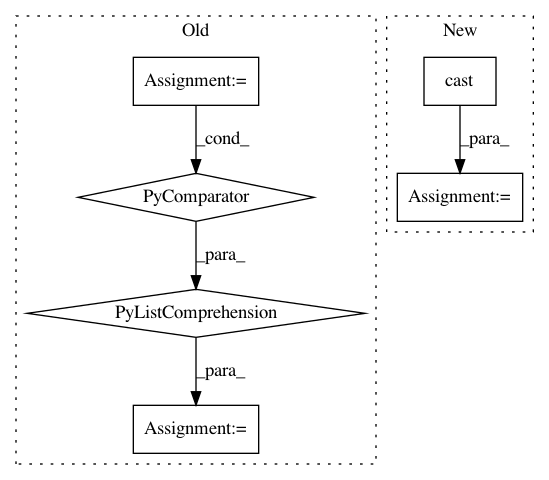

674ecfb9db45ff2f65088ef4662401f29cb3a8ad,ml/rl/workflow/preprocess_handler.py,ContinuousPreprocessHandler,preprocess,#ContinuousPreprocessHandler#Any#,236
Before Change
sorted_action_features, _ = (
self.action_preprocessor._sort_features_by_normalization()
)
sorted_action_features_str = [str(x) for x in sorted_action_features]
actions = self.sparse_to_dense_processor(
sorted_action_features_str, batch["action"]
)
After Change
np.array(batch["next_action"], dtype=np.bool).astype(np.float32)
).reshape(-1, 1)
base_input = cast(BaseInput, training_batch.training_input)
return training_batch._replace(
training_input=PolicyNetworkInput(
state=base_input.state,
action=actions,
In pattern: SUPERPATTERN
Frequency: 3
Non-data size: 6
Instances
Project Name: facebookresearch/Horizon
Commit Name: 674ecfb9db45ff2f65088ef4662401f29cb3a8ad
Time: 2019-07-07
Author: jjg@fb.com
File Name: ml/rl/workflow/preprocess_handler.py
Class Name: ContinuousPreprocessHandler
Method Name: preprocess
Project Name: NifTK/NiftyNet
Commit Name: e49dbd02c177843b023d3104b9596bd47440c308
Time: 2017-10-31
Author: wenqi.li@ucl.ac.uk
File Name: niftynet/layer/resampler.py
Class Name: ResamplerLayer
Method Name: _resample_linear
Project Name: explosion/thinc
Commit Name: 9334d336f027e8b90d5751458c7794f8a0167559
Time: 2020-05-11
Author: justin@dujardinconsulting.com
File Name: thinc/shims/mxnet.py
Class Name: MXNetShim
Method Name: finish_update